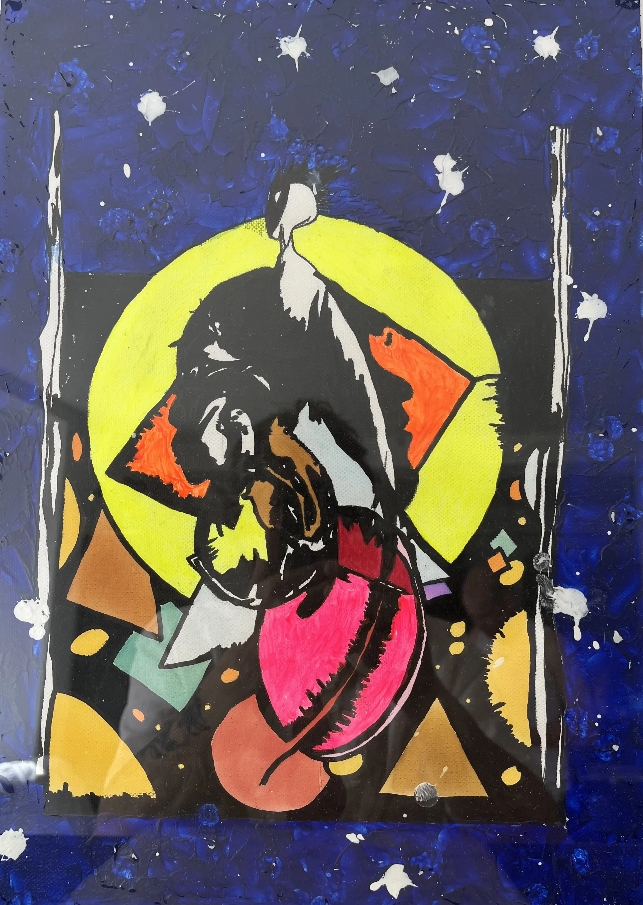
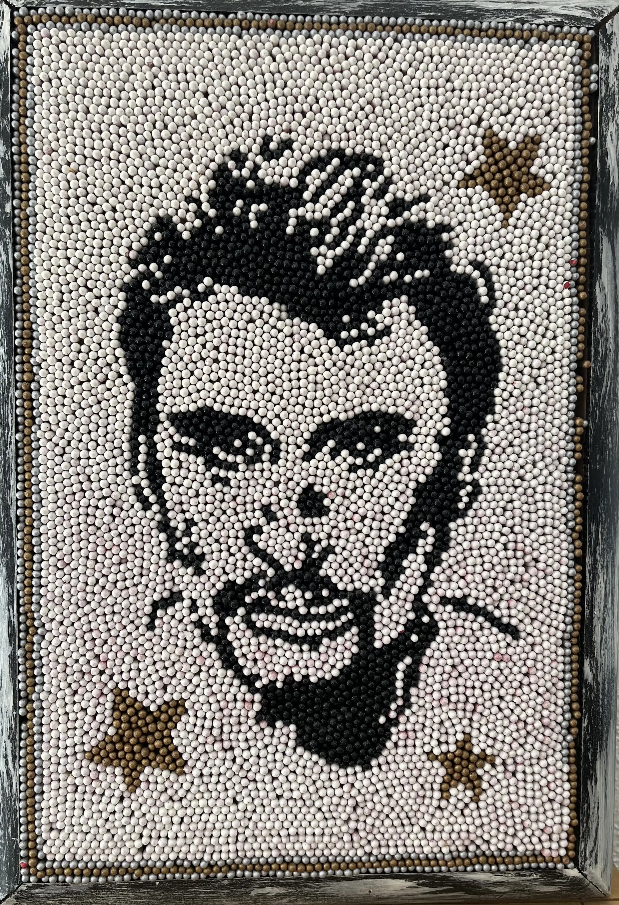
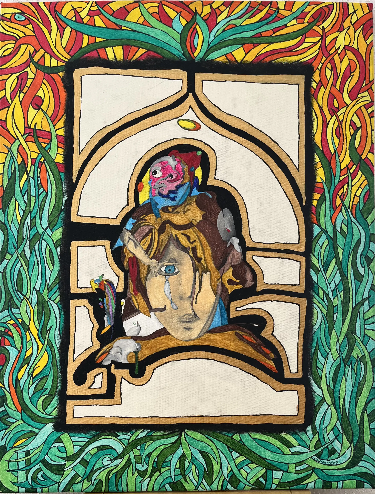

L'émotion par la couleur Olivier Costantino • Artiste peintre à Cernay (68)
Bienvenue dans mon univers. Découvrez des toiles où la matière et les teintes vives se rencontrent.
Découvrir mes toilesŒuvres récentes

Connection

Johnny (allumettes)
